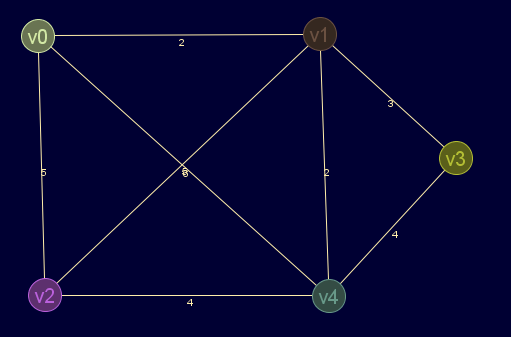
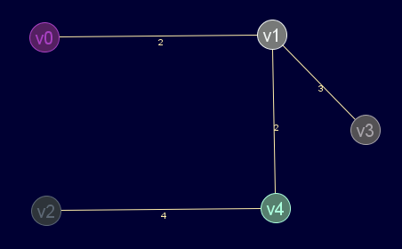

Descripción
Aplica el algoritmo de Prim-Jarnik a grafos ponderados conexos. Devuelve el grafo del árbol recubridor mínimo.
Si el grafo no es ponderado, se tomarán las aristas con peso igual a 1 y la ausencia de ellas como infinito
Cadena de entrada
gr_prim
Cadena de salida
GRAFO.prim
Uso
gr_prim(<grafo>[,<nodo_inicial>])
| Parámetros | |||
|---|---|---|---|
| # | Parámetro | Descripción | Valor por defecto |
| 1 | grafo | Diccionario válido de grafo | |
| 2 | nodo_inicial | Nodo desde el que se inicia el algoritmo de Prim-Jarnik | 0 |
Ejemplos
gr_nuevo([[inf,2,5,inf,6],[2,inf,5,3,2],[5,5,inf,inf,4],[inf,3,inf,inf,4],[6,2,4,4,inf]],false,true)
Salida en JMEScriptGUI con visor de grafos v0.1:

gr_prim(gr_nuevo([[inf,2,5,inf,6],[2,inf,5,3,2],[5,5,inf,inf,4],[inf,3,inf,inf,4],[6,2,4,4,inf]],false,true))
Salida en JMEScriptGUI con visor de grafos v0.1:

Véase también…
Desde / Última modificación
v0.6.2.0